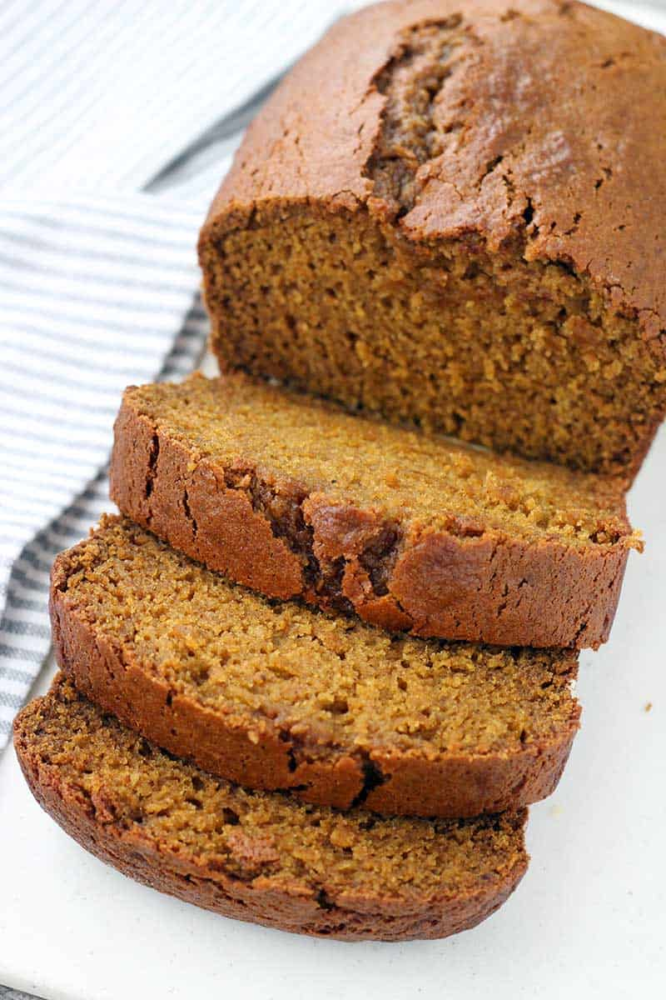

Spiced Pumpkin Bread

Description
This is a spiced pumpkin bread that can be made with at home ingredients
Ingredients
- 1 ½ cups white sugar
- 1 cup light brown sugar
- 1 cup butter, melted
- 2 eggs
- 1 tablespoon vanilla extract
- 3 cups pumpkin puree
- 4 cups all-purpose flour
- 2 tablespoons ground cinnamon
- 1 tablespoon baking powder
- 1 tablespoon baking soda
- 1 teaspoon ground nutmeg
- ½ teaspoon ground cloves
- ½ teaspoon salt
Steps
- Preheat oven to 350 degrees F (175 degrees C).
- Mix white sugar, brown sugar, and melted butter together in a large bowl. Stir in eggs and vanilla extract; mix in pumpkin until thoroughly combined.
- Whisk flour, cinnamon, baking powder, baking soda, nutmeg, cloves, and salt together in a separate bowl. Mix flour mixture into pumpkin mixture until incorporated.
Pour batter into three 5x9-inch loaf pans. Smooth batter evenly in each pan.
- Bake in the preheated oven until a toothpick inserted in the middle of each loaf comes out clean, 45 to 50 minutes.